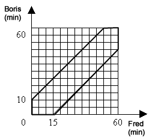

Anna, Boris and Fred decided to go to a children's Christmas party. They agreed to meet at the bus stop, but they do not know who will come to what time. Each of them can come at a random time from 15:00 to 16:00. Fred is the most patient of them all: if he comes and finds that neither Anna nor Boris are at the bus stop, then Fred will wait for one of them for 15 minutes, and if he waits for more than 15 minutes and no one arrives he will go to the Christmas party by himself. Boris is less patient: he will only wait for 10 minutes. Anna is very impatient: she will not wait at all. However, if Boris and Fred meet, they will wait for Anna until 16:00. What is the probability that all of them will go to the Christmas party?
Since Anna will not wait at all, the three friends will all go to the party together only if Anna arrives last. Obviously, these events are independent, therefore, P$($all three will go to the party together$)$ = P$($Anna will arrive last$)$ P$($Boris and Fred will meet$)$.
The first probability is obviously 1/3.
The second probability can be found geometrically $($see the figure$)$:

The figure, circled in black, is the set of those times of the arrival of both, under which they will meet. Thus, the probability is equal to the ratio of the area of the selected part to the area of the $12 \times 12$ square. As a result, we get
Consequently, the required probability is $1/3 \times 0.3715 ≈ 0.124$.
≈0.124.